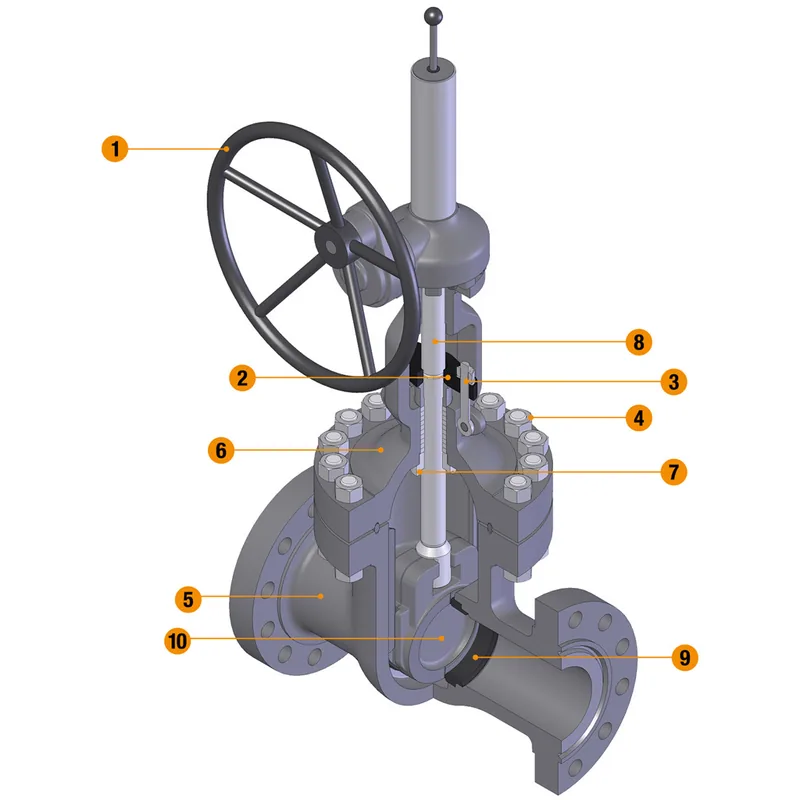
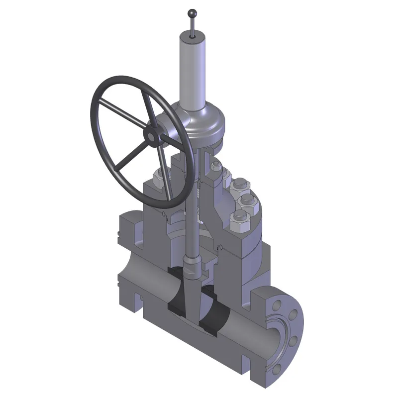
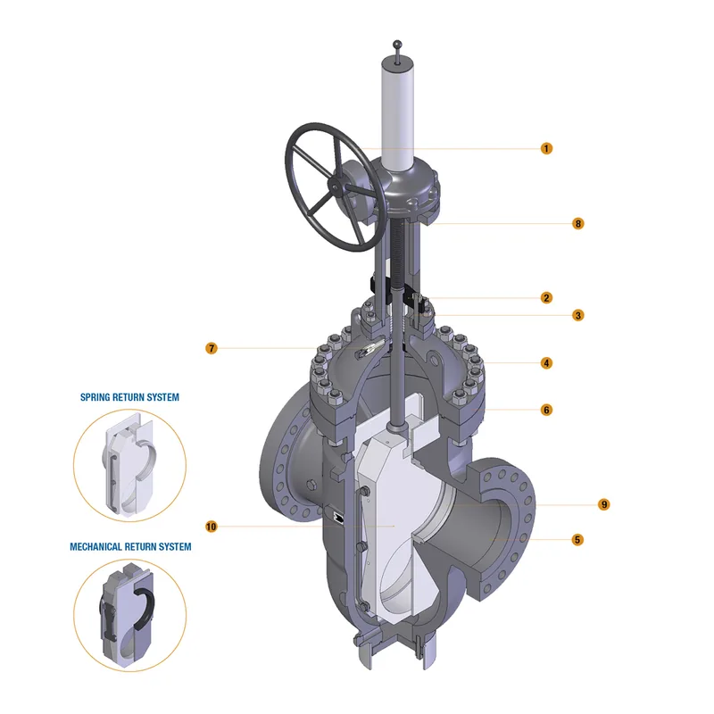
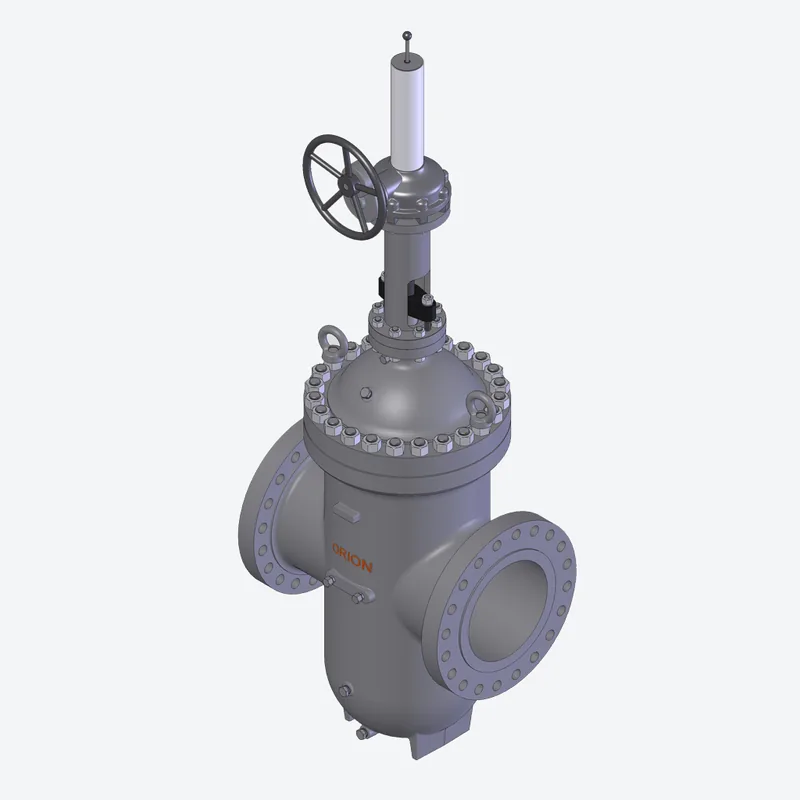
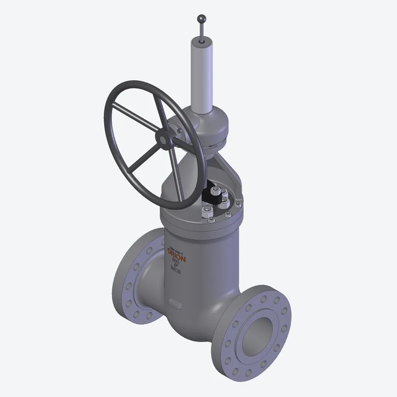
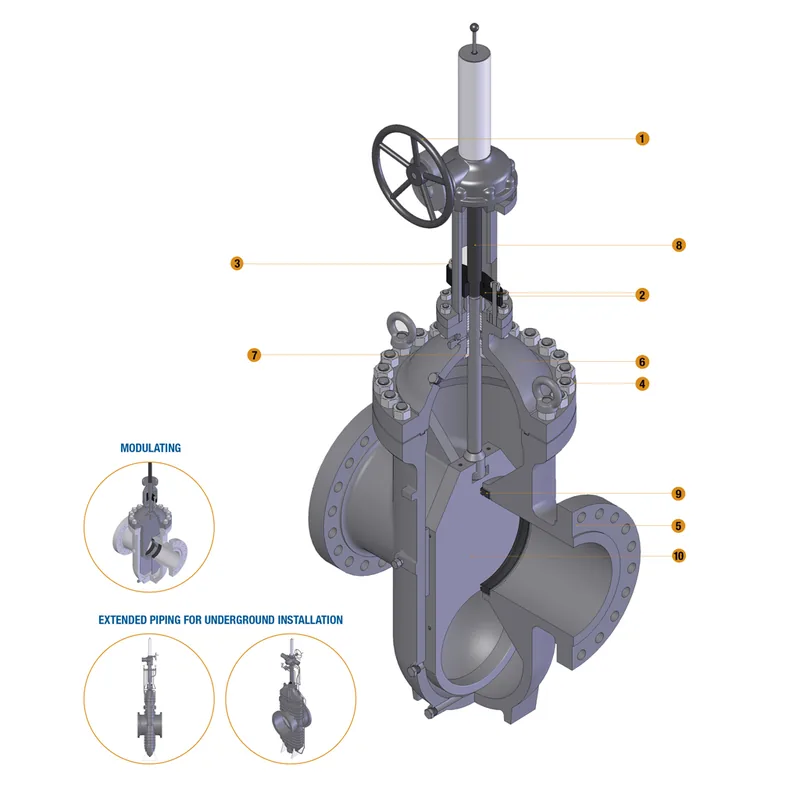
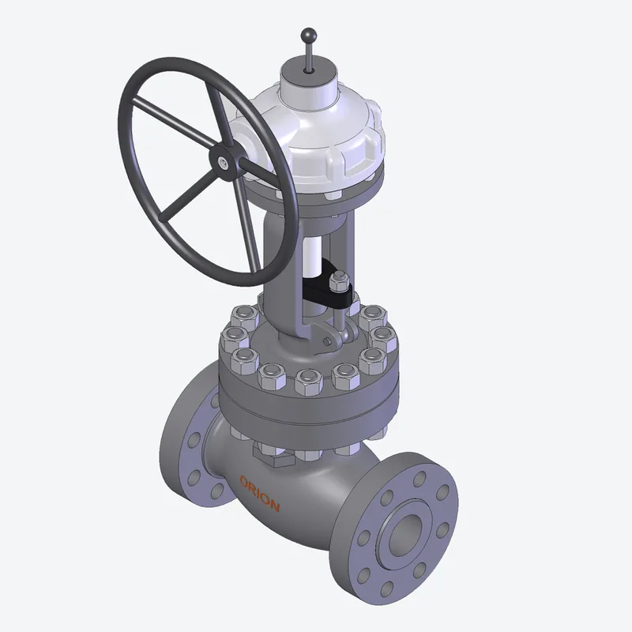
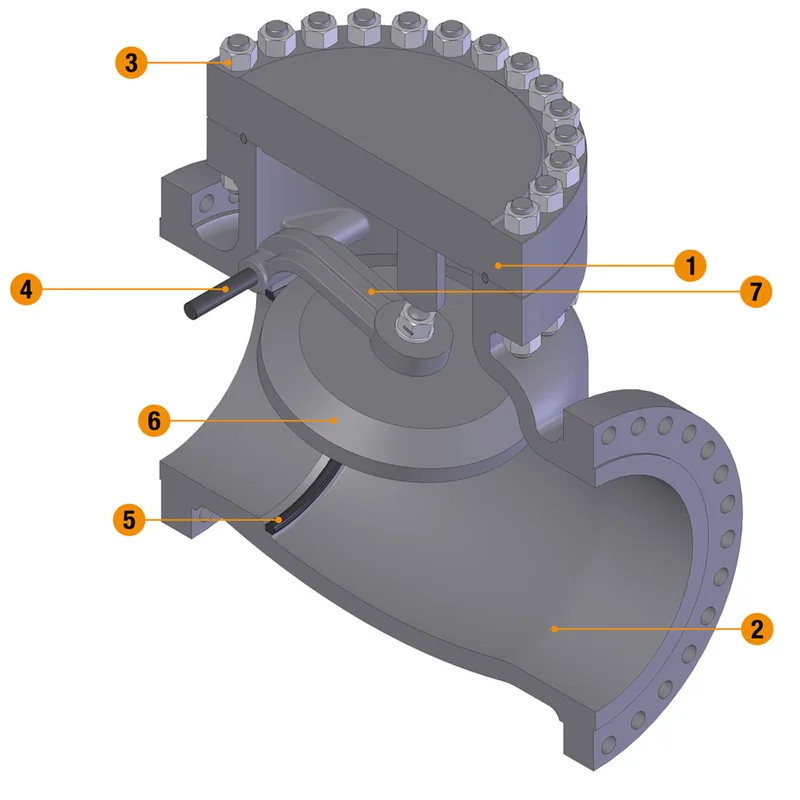

Valves
Gate valves
Cast steel gate valves for pipeline and process isolation: API 6A, parallel slide, modulating slab, pipeline, pressure seal and single disc designs.

About this range
Orion Valves cast steel OS&Y gate valves follow API 600 with a rising stem, solid wedge and renewable seat rings, in ASME Classes 150 to 2500. A flexible wedge, cladding or lining can be specified.
Larger valves take a bevel or spur gearbox. For pipelines the through-conduit API 6D designs allow scrapers and spheres to pass.
- Standards
- API 600, API 6D, API 6A
- Pressure classes
- ASME 150 to 2500 (API 600)
- Operators
- Handwheel, bevel or spur gearbox
Manufacturer: Orion Valves
Gate valves: 6 types

API 6A Gate ValvesConduit type API 6A gate valves, single disc or expanding gate.View details
Double Block & Bleed Parallel Slide Gate ValveParallel discs forced onto both seats, with spring-assisted opening.View details- Modulating Slab ValveSlab gate valve listed by VSA for modulating duty.View details

Pipeline ValveAPI 6D through-conduit gate valves for pipeline service.View details
Pressure Seal Bonnet Gate ValveHigh-pressure gate valve with a pressure-energised bonnet seal. ASME 600 to 2500.View details
Single Disc Gate ValveAPI 6D through-conduit gate with floating, self-relieving seats.View details
Other valve families
All valves
Globe valvesCast steel globe valves for isolation and regulation in three designs: standard, angle and.View details Ball valvesQuarter-turn isolation valves in fully welded, side entry, top entry, three way and twin ball.View details
Ball valvesQuarter-turn isolation valves in fully welded, side entry, top entry, three way and twin ball.View details
Check valvesNon-return valves in axial, dual plate, swing, tilting disc and pressure seal designs for gas.View details Control valvesFlow control valves for gas, power and process duty, sourced through our principals to suit the.View details
Control valvesFlow control valves for gas, power and process duty, sourced through our principals to suit the.View details

Tell us what you need to isolate, control or actuate.
Send the valve type, size, class and quantity if you have them. We aim to reply within 24 hours.